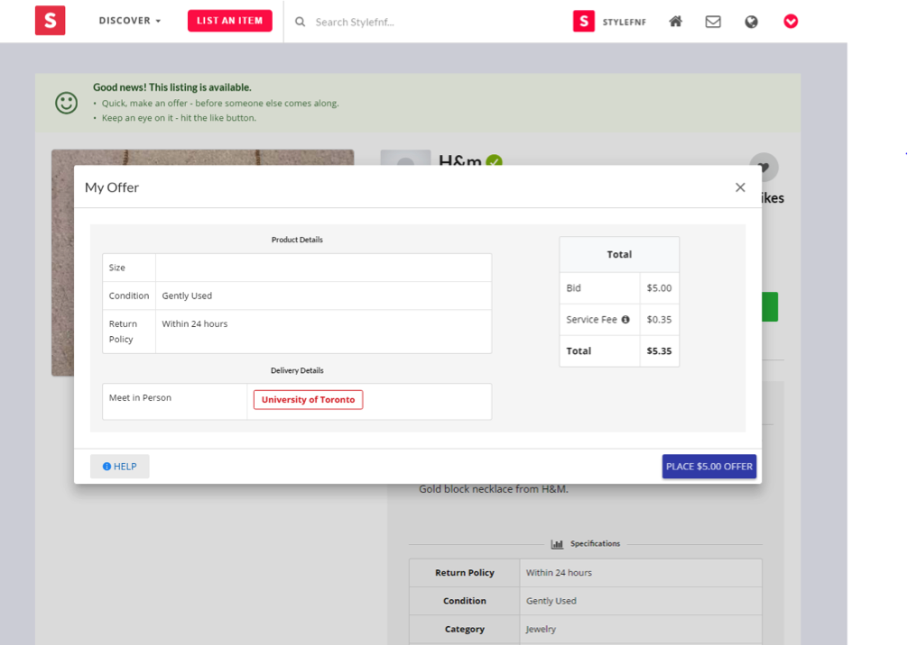

Stylefnf’s payment system is designed to make transferring money between sellers and buyers as simple and reliable as possible.
Step 1. Buyers pay Stylefnf when they purchase an item.
Step 2. Stylefnf releases the money once the item has been transferred from the seller to the buyers (buyers simply need to press the Pay button).

Using Stylefnf’s payment system is not required to make a purchase but it helps to ensure that both parties are protected . The various forms of payment that are accepted are credit, debit, cash, and Paypal.
Stylefnf automatically includes a small service fee in each transaction.